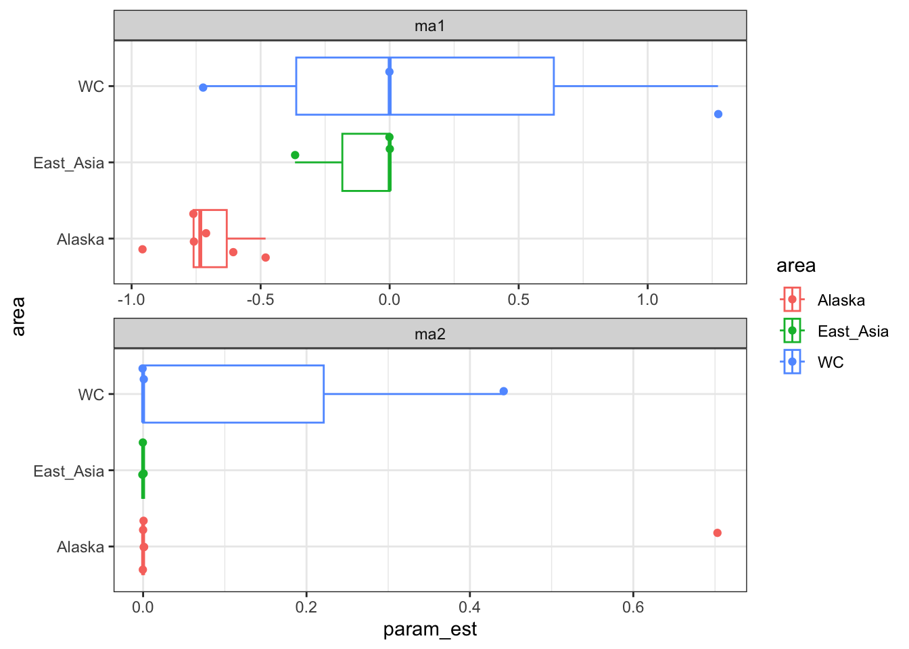

6 Team 4
Lab 1 Forecasting with ARIMA models
7 Lab 1: ARIMA models
Team member names: Terrance Wang (SAFS), Karl Veggerby (SAFS)
8 Data
Ruggerone & Irvine Data. We will focus on sockeye salmon and all their 15 regional stocks in the North Pacific.
9 Question your team will address
What is the autoregressive structure for sockeye salmon? Is there a general autoregressive structure to describe all sockeye salmon regional stocks? Are there similarities and differences within and among North American West Coast, Alaska, and East Asian sockeye stocks?
Do different summarizing approaches of fitting ARIMA confirm the answers for the above questions?
10 Method you will use
- Fit ARIMA models for individual regional stocks and summed area stocks. Compare ARIMA structures and parameters of all regions and of larger areas. Compare results between the individual regional stocks and summed area stocks.
10.0.1 Initial plan
We will fit ARIMA models for each of the sockeye regional stocks with the Box Jenkins method, which includes selecting the model form, estimating the parameters, and diagnosing the model. We will then compare the parameters of the individual ARIMA model structure among regional stocks and larger area aggregations with summary statistics and plots.
We will also fit ARIMA models for each of the 3 areas by summing a scaled time series of each of the regions. We will then compare these area-wide ARIMA models to the summary of regional models.
10.0.2 What you actually did
The first step of the plan was relatively straightforward. The interpretation of each regional ARIMA model and comparing them within and among areas was not statistically rigorous, but hopefully still informative.
The second step of our initial plan was difficult to defend. Comparing and interpreting results among ARIMA models at different spatial scales did not seem statistically kosher, but we still proceeded anyways.
11 Diagnostics and preliminary exploration
11.0.1 Massage the data
11.0.2 Plot the data

At the regional level, systematic changes in the mean are present in many of the stocks (e.g., nbc, w_kam, kod). There are a few increasing means and some random-walk-like ones. There is a strong linear trend in the ci, kod, and s_pen regions. Changes in the variance may also be present in a few stocks (e.g., wak, kod). 4-year period cycles are possible in several regions (e.g., wak, sbc).
At the area-wide level, Alaska, East Asia, and NA West Coast all exhibit systematic changes. There are some similarities among areas. Alaska and NA West Coast share periodic variations. Alaska and East Asia both have increasing regional stocks. There also differences among areas, such as the decreasing trend and increasing variance in the West Coast regional stocks.
From these plots, we interpret that there is likely non-stationarity at both the regional and area-wide scale, and proceed with our analysis.
11.0.3 Use ACF and PACF

A handful of regions (e.g., ci, seak) show ACF with a long tail and PACFs that cut off at 1-3 orders, which may indicate some autoregressive structure. Other regions (e.g., pws, m_i) have a sharp cut off with ACF and tailing PACFs, which may suggest a moving average structure. Some regions (s_pen,w_kam,kod) show long tails for both ACF and PACF, suggesting ARMA structure. A few regions show periodic trends (negative AR parameters) from their oscillating correlations factors.
11.0.4 Test for stationarity
We ran stationarity tests at the area-wide level for simplicity.
| Region | DF_Test_diff0_p | DF_Test_diff1_p | N_pred_diffs |
|---|---|---|---|
| AK | 0.6692914 | 0.01 | 1 |
| E_Asia | 0.7455006 | 0.01 | 1 |
| US_WC | 0.4780300 | 0.01 | 0 |
The Dickey-Fuller tests for each of the 3 areas do not reject the null hypothesis that the data is non-stationary. Differencing all 3 areas by 1 order makes the sockeye abundance stationary, suggesting random walk characteristics. The unit root tests of estimated order of differencing confirms the D-F tests for Alaska and East Asia, but not NA West Coast. The NA West Coast does have a non-moving mean, which partly explains the difference between D-F test and unit root test.
Altogether, the abundance plots, ACF and PCF plots, and stationarity tests demonstrate that the abundances of the regional stocks can be explained by some combination of auto-regressive, differencing, and moving average components. For this reason, we proceed forward with fitting ARIMA models to each of the regional stocks.
12 Results
12.1 Regional ARIMA models
We fit ARIMA models to each individual regional stock and report the fits and diagnostics in the table below.
| area | region | p | d | q | ar1 | ar2 | ma1 | ma2 | resid_p |
|---|---|---|---|---|---|---|---|---|---|
| Alaska | ci | 1 | 1 | 1 | 0.3771937 | 0.0000000 | -0.7575114 | 0.0000000 | 0.0955948 |
| Alaska | kod | 0 | 1 | 1 | 0.0000000 | 0.0000000 | -0.6049560 | 0.0000000 | 0.3682442 |
| Alaska | pws | 1 | 1 | 1 | 0.4031980 | 0.0000000 | -0.9583822 | 0.0000000 | 0.0312119 |
| Alaska | seak | 0 | 1 | 1 | 0.0000000 | 0.0000000 | -0.4807931 | 0.0000000 | 0.3015960 |
| Alaska | s_pen | 0 | 1 | 1 | 0.0000000 | 0.0000000 | -0.7605650 | 0.0000000 | 0.9076421 |
| Alaska | wak | 2 | 1 | 2 | 0.5174071 | -0.9318466 | -0.7103177 | 0.7039975 | 0.2357500 |
| East_Asia | e_kam | 1 | 0 | 0 | 0.7956410 | 0.0000000 | 0.0000000 | 0.0000000 | 0.4879928 |
| East_Asia | m_i | 1 | 0 | 0 | 0.5291796 | 0.0000000 | 0.0000000 | 0.0000000 | 0.5479562 |
| East_Asia | w_kam | 0 | 1 | 1 | 0.0000000 | 0.0000000 | -0.3667696 | 0.0000000 | 0.0992328 |
| WC | nbc | 1 | 0 | 1 | 0.9296554 | 0.0000000 | -0.7239860 | 0.0000000 | 0.3154644 |
| WC | sbc | 0 | 0 | 0 | 0.0000000 | 0.0000000 | 0.0000000 | 0.0000000 | 0.0015210 |
| WC | wc | 1 | 0 | 2 | -0.9320727 | 0.0000000 | 1.2724536 | 0.4421506 | 0.6338888 |
The best fitting ARIMA models show a wide diversity of structure. Similarities and differences within and among areas will be discussed in more detail in the next section. Residuals are generally stationary, meaning acceptable ARIMA fits, with a few exceptions (e.g., kod, sbc). Below, the example of w_kam shows that residuals show signs of stationarity like a stable mean, normal distribution of values, and little autocorrelation. Though there is some temporal pattern in the variance.
Ljung-Box test
data: Residuals from ARIMA(0,1,1)
Q* = 14.709, df = 9, p-value = 0.09923
Model df: 1. Total lags used: 10


12.1.1 Comparing regional ARIMA models within and among area
The ARIMA structure for all sockeye stocks (ignoring area) do not show a clear pattern in AR, differencing, and MA. A slight majority of stocks support first order AR, differencing, and MA. When we look closer at the parameter values, there is a small tendency for sockeye to have positive AR1 values and negative MA1 values. This suggests sockeye populations are loosely related to the previous time step and deviate around the general trajectory with a 2 year period.
Alaska shows a consistent ARIMA pattern for all of its regions. The best fit ARIMA models for AK regions all predict first difference. AK strongly supports a first order of the moving average part. Additionally, all AK regions have negative MA1 values. There is some substructure of ARIMA properties within AK. AK shows no area-wide consensus on the order of the autoregressive part, but Looking more closely at the autoregressive parameter values of Alaska regions, we see only positive AR1 values for the regions with at least 1 order of AR (wak,ci,pws). Wak, ci, and pws populations tend to be more related to the previous year than other AK regions are.
West Coast regions do not have a consensus on ARIMA structure, with an exception of 0 differencing. AR1 and MA1 parameters range from negative to positive. This inconclusiveness is partly explained by the low sample size (n=3). East Asia regions are also inconsistent on the predicted order number of the moving average and autoregressive components. With only 3 East Asia regions with data, it is difficult to construe any pattern.
12.2 Area ARIMA models
We fit ARIMA models to each area stock (scaled, summed, and logged) and report the fits and diagnostics in the table below.
| area | p | d | q | ar1 | ar2 | ma1 | ma2 | resid_p |
|---|---|---|---|---|---|---|---|---|
| Alaska | 2 | 1 | 2 | 0.5975743 | -0.8201475 | -0.9625597 | 0.7736959 | 0.5803041 |
| East_Asia | 1 | 1 | 0 | -0.2890606 | 0.0000000 | 0.0000000 | 0.0000000 | 0.6259541 |
| WC | 0 | 0 | 0 | 0.0000000 | 0.0000000 | 0.0000000 | 0.0000000 | 0.0265574 |
12.2.1 Comparing regional ARIMA models to area ARIMA models
The area-wide ARIMA structures did not match their regional counterparts. The best fitting AK ARIMA model was a 2 order AR and MA and 1 order difference structure, which contrasts with the <2 order AR and 1 order MA of the summarized ARIMA structure of the regional stocks. The East Asia ARIMA model has some semblance to the regional E Asia stocks, but this is inconclusive because of the low sample size. West Coast model had no ARIMA structure which does not to capture the non-stationarity of some NA WC regional stocks.
13 Discussion
Overall, the sockeye stocks population trajectories are clearly not stationary. All regions benefit from ARIMA models to understand their underlying temporal dynamics. There is no unifying ARIMA structure that can reliably describe all sockeye populations. This is unsurprising because of the wide spectrum of biological and environmental forces that impact sockeye across its species range. Scattered across the North Pacific are 3 sockeye ecotypes (kokanee, lake, sea/river) that often occur together in the same watershed. Some regions, such as Southern British Columbia, also undergo more human disturbance than other more “pristine” regions, such as Western Alaska.
Alaska regional stocks seem to share similar temporal dynamics and this is especially true for wak, ci, and pws stocks. We do not what the mechanisms for the shared pattern of these 3 stocks, which are not spatially adjacent to each other. We did not detect reliably, representative ARIMA structures for both the West Coast and East Asia stocks. The low sample size of 3 for both areas is a likely reason for the inconclusiveness.
Interestingly, the area-wide ARIMA structures did not confirm the area-summarized regional ARIMA ones. Summing the scaled totals by area seems to wash away the temporal dynamics within each region and do not describe the general ARIMA structure and diversity of structures within areas. A next step would explore the potential area-wide ARIMA model candidates for each area since we looked only at the best fitting ones.
14 Description of each team member’s contributions
Terrance did most of it, Karl did stationarity section.